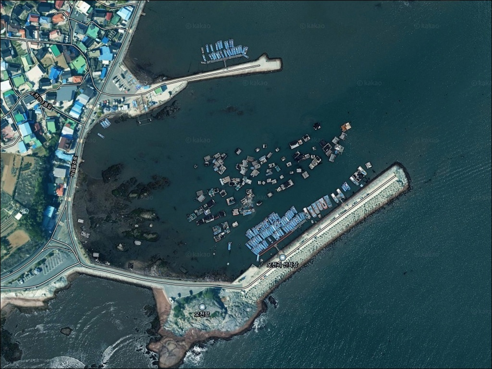
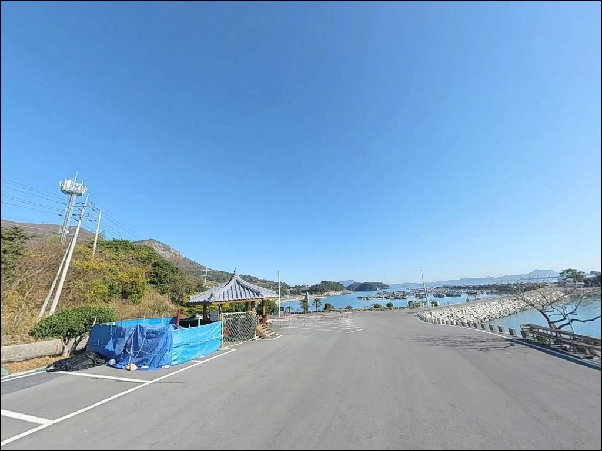
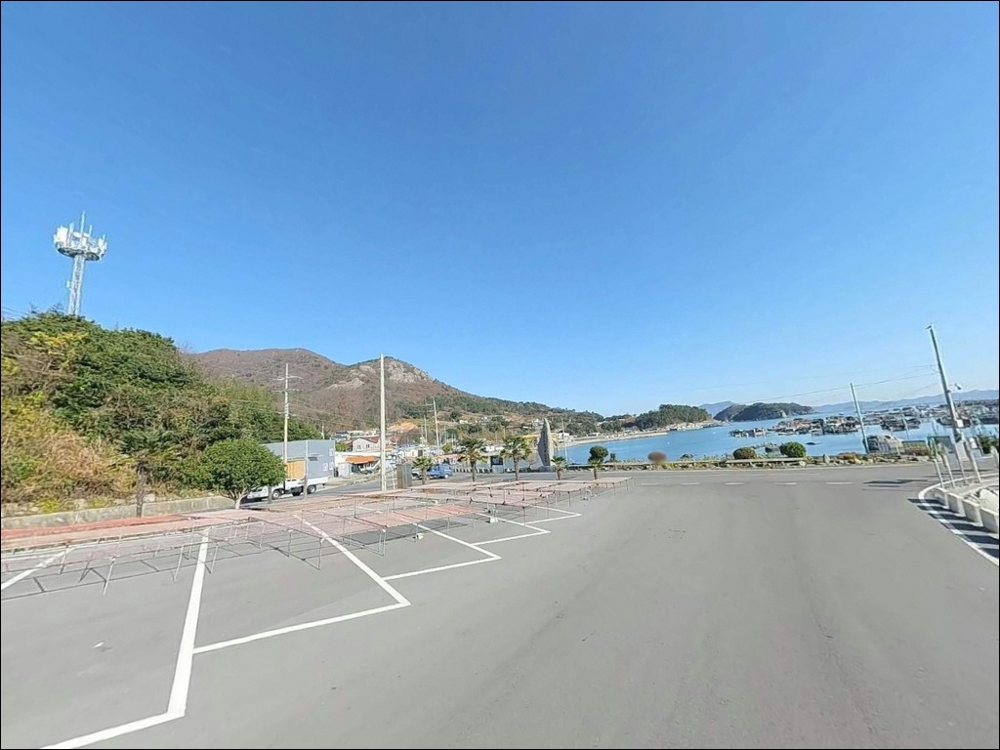
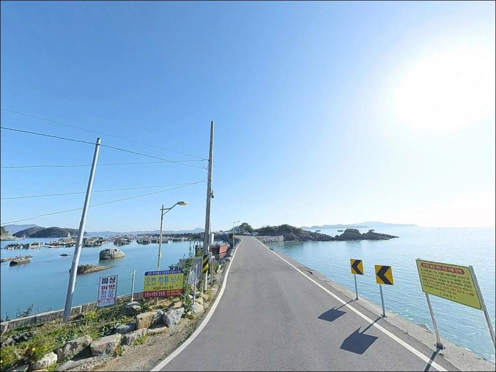
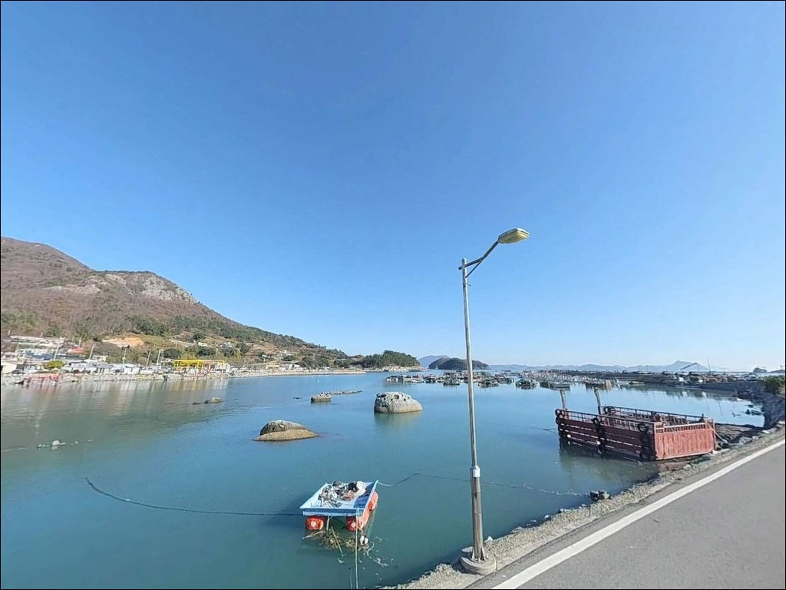
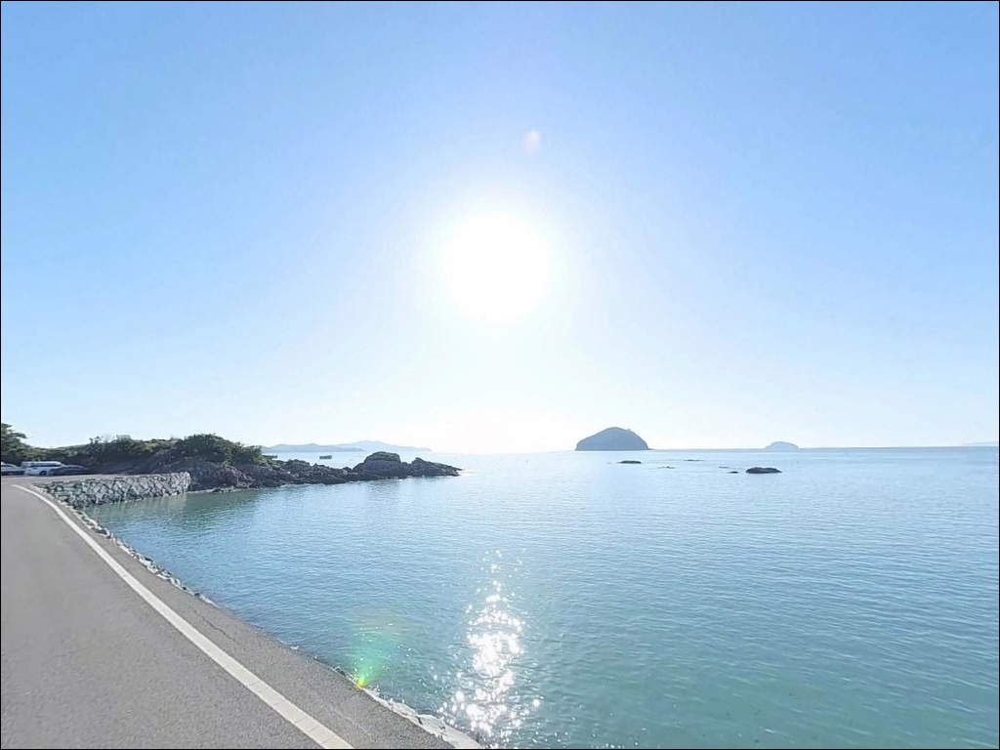
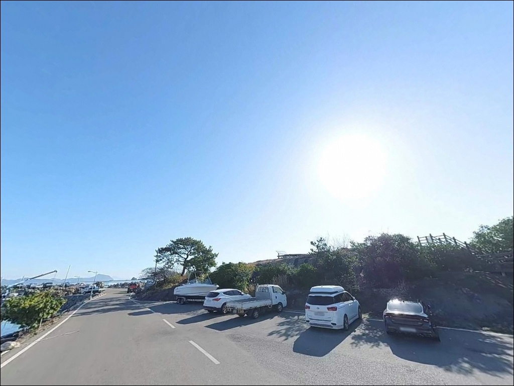
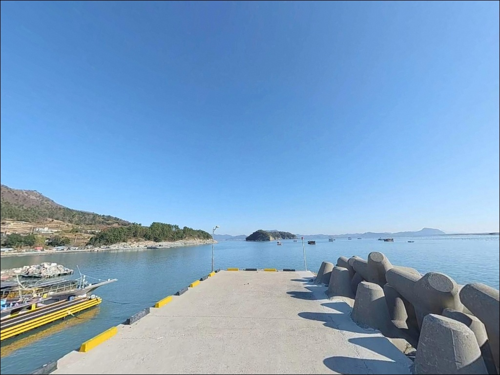
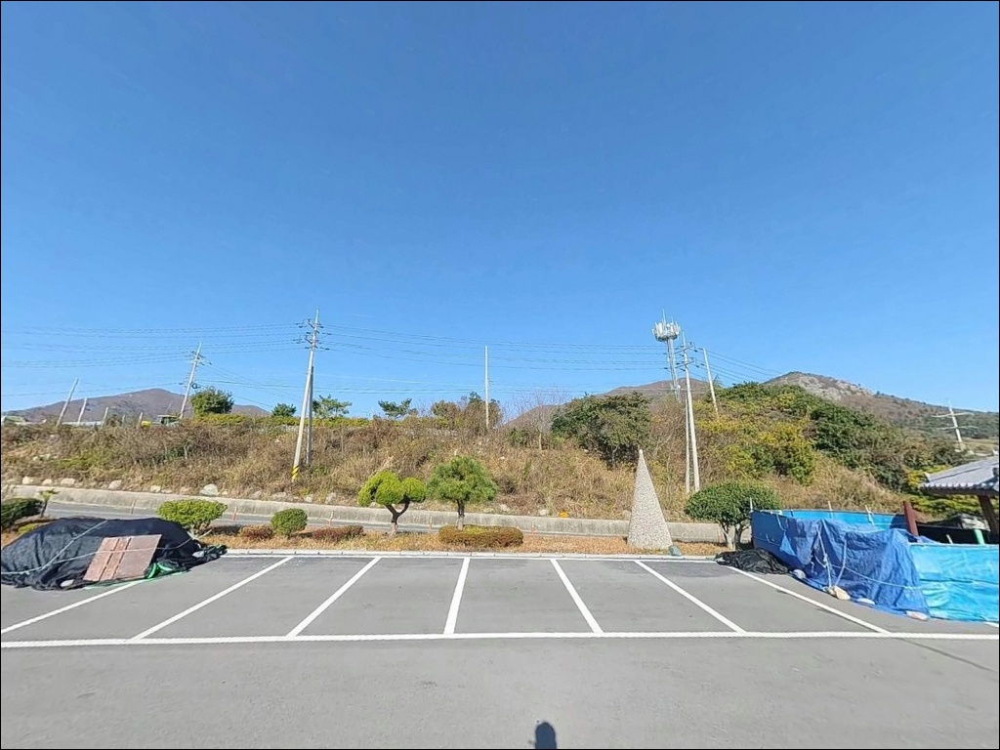

이 페이지에는 광고(제휴 링크 포함)가 있으며, 광고 링크를 통해 구매하면 운영자가 판매 수익 또는 수수료를 받을 수 있습니다. 포인트 사진: 카카오맵 스카이뷰·로드뷰. 이 페이지의 지도·사진 이미지는 카카오맵의 실제 서비스 이미지와 다를 수 있습니다.

오천항
전남 고흥군 금산면 오천리 224-23
오천항은 2019년 국가어항으로 지정되어
동방파제·남방파제 신설 공사가 진행 중인 곳입니다.
공사 이전부터 형성된 선착장 구간과
바로 옆 오천몽돌해변 갯바위가
현재 낚시 진입의 핵심 구간이며,
이 두 구간이 어디인지 파악해두지 않으면
현장에서 자리 선택에 혼선이 생깁니다.
거금도 일주도로를 따라
거금대교에서 남동쪽으로 이어지는 포장도로 끝에
오천항이 있습니다.
방파제 외항과 내항의 수심 차이가 뚜렷하고,
항 입구 조류 흐름이 살아 있어
원투낚시부터 에깅까지 복수 방식이 가능한
항구형 포인트입니다.
이 글은 오천항의 현재 낚시 진입 구간,
차박 여건, 지형 기반 공략 조건에 집중합니다.
조황 단정이나 특정 어종 보장은
이 글의 범위에 포함되지 않습니다.

거금대교를 건너 거금도로 진입한 뒤
금산면 해안도로를 따라 남동쪽으로 이동하면
오천리에 닿습니다.
국도 27호선 기점에 해당하는 지점으로,
항구까지 연결되는 도로는
왕복 2차로 포장도로 전 구간이
비포장·급경사 없이 이어집니다.
대형 SUV나 루프탑 장착 차량도
진입에 별다른 제약이 없는 수준입니다.
항 내부와 선착장 인근에
회차 공간이 충분히 확보되어 있어
차량 방향 전환에 어려움이 없는 구조입니다.
주차는 항 입구 공터, 방파제 초입 주변,
오천몽돌해변 접점 구간 도로변에서
분산하여 활용하는 방식이 현실적입니다.
낚시 자리와 주차 위치의 거리를 미리 가늠하고
짐 이동 동선을 계획해두는 편이 좋습니다.

오천항은 거금도 해안도로 끝자락에 위치해
야간 차량 통행이 많지 않습니다.
항구 선착장과 방파제 초입에는
어항 특성상 가로등과 항만 조명이 설치되어 있어
야간 이동 시 시야가 확보되는 수준입니다.
바로 옆 오천몽돌해변은
고흥 10경에 포함된 공식 관광지이기 때문에
낚시 시즌에는 방문객 유입이 있는 편입니다.
순수 어촌 항구에 비해
프라이버시 수준이 다소 낮은 환경입니다.
차박을 목적으로 한다면
해변에서 약간 떨어진 선착장 쪽 공간이
상대적으로 조용합니다.
거금도 남동쪽 개방 방향이어서
남풍·남서풍 계열 기상 악화 시
파도가 빠르게 높아지는 구조입니다.
출발 전 해상 예보를 반드시 확인하고,
바람이 강한 날은 체류 자체를 재검토하는 편이 좋습니다.

오천항 반경 3km 이내
금산면 내부 도로변을 따라
소규모 식당과 상점이 분포합니다.
영업 시간과 상시 운영 여부는
출발 전 검색으로 확인하는 편이 정확합니다.
반경 10km권인 녹동항까지 이동하면
거금도 최대 인프라 거점이 됩니다.
수산물 시장과 공영주차장, 낚시 용품점이
녹동항 일대에 운영 중이어서
채비 보충이나 얼음 구매는
녹동항을 경유하는 동선이 효율적입니다.
거금대교를 건너기 전,
즉 거금도에 진입하기 전 단계에서
필요한 소품과 식량을 미리 챙겨두는 것이
가장 현실적인 준비 방식입니다.

오천항 방문 전에 가장 먼저 확인할 것은
공사 구간 현황과 물때입니다.
현재 동방파제·남방파제 공사가 진행 중이므로
진입 가능한 낚시 구간이
이전보다 좁아져 있는 상태입니다.
출발 전 오천항 현장 상황 검색을
반드시 해두는 편이 좋습니다.
내항 선착장 구간은 간조 기준으로
수심이 얕아지는 구간이 포함되어 있습니다.
바다타임에서 오천리 기준 물때를 확인하고,
만조 전후로 진입 타이밍을 맞추는 것이
이 포인트에서 기본적인 전략입니다.
외항 방향은 조류 흐름이 확실해
물때 판단이 조과에 직접 영향을 줍니다.
몽돌해변 끝단 갯바위는
파도에 젖으면 미끄러움이 심합니다.
미끄럼 방지 신발을 착용하고,
혼자 끝단까지 이동하지 않도록 합니다.
구명조끼는 방파제와 선착장 구간에서
반드시 착용하는 것이 기본입니다.

오천항의 낚시 여건을 이해하는 핵심은
내항과 외항의 성격 차이입니다.
내항 선착장 구역은 정박 어선이 모이는
정온한 수면 구조로,
수심이 얕고 조류 영향이 제한적입니다.
반면 외항 방향은 남해 개방 구조상
조류 흐름이 살아 있고 수심 변화 폭이 큽니다.
기존 선착장 발판이 안정적인 구간은
원투낚시 진입에 유리한 조건입니다.
방파제 끝단과 항 입구 수로 주변은
조류가 직격하는 구간으로
루어 반응이 살아나는 자리입니다.
바닥 저질은 펄과 수중여가 혼합된 형태로,
밑걸림 가능성을 염두에 두고
채비 여분을 넉넉히 준비하는 편이 좋습니다.
오천몽돌해변 양 끝단으로
해안 절벽과 갯바위 지형이 이어집니다.
갯바위 끝단부로 갈수록 수심이 빠르게 깊어지는
지형 패턴을 보이며,
이 일대 거금도 연안은
감성돔, 볼락, 갑오징어, 문어를
기대할 수 있는 해역입니다.
출조 전 거금도 오천항 일대 최신 조황은
반드시 별도로 검색해 보시기 바랍니다.

선착장 발판이 안정적인 구간에서는
원투낚시가 가장 수월하게 전개됩니다.
수심과 조류가 동시에 확보되는
외항 방향 구간을 노리는 방식으로,
붕장어와 도다리계열 바닥 어종을
대상으로 공략할 수 있는 구조입니다.
찌낚시는 외항 방향 발판 구간과
내항 석축 직벽 구간에서 전개합니다.
조류가 센 편이어서
고부력 채비를 운영하는 것이
이 포인트에 맞는 방식입니다.
감성돔, 숭어, 학공치를
시즌에 따라 노려볼 수 있습니다.
에깅·루어는 몽돌해변 갯바위와
선착장 발밑 구간 모두에서 전개할 수 있습니다.
거금도 전역이 문어·갑오징어 포인트로 알려진 해역이며,
봄철 갑오징어 시즌을 시작으로
여름 문어, 가을 감성돔 순으로
시즌이 이어지는 패턴입니다.
야간에는 선착장 발밑 에깅이 유효한 편입니다.

오천항 공사 구간으로 낚시 자리가 여의치 않거나
조류가 너무 강한 경우,
첫 번째 대안은
익금방파제입니다.
거금도 일주도로를 타고 약 6~7km 이동하면
닿는 거금도 대표 낚시 포인트로,
방파제 구조가 안정적이어서
원투낚시와 찌낚시 모두 가능한 구간입니다.
거금대교를 건너
녹동항 방향으로 이동하면
소록대교 방파제 구간이 있습니다.
거리는 약 10km 수준이며,
감성돔과 루어낚시 조황이
거금도-소록도 해역에서 확인되는 포인트입니다.
낚시 채비 보충이 필요하다면
녹동항을 들러 이동하는 동선이 효율적입니다.
차박 대안으로는
거금도 내 익금해수욕장 인근 공간이
주차 면적이 넓고
낚시 접근성도 갖추고 있어
오천항이 붐비는 상황에서
대체 체류지로 활용하기 좋습니다.

외항 방파제 공사가 2028년 완공되면
오천항은 동방파제 250m 구간 전체가
본격 낚시 포인트로 열리게 됩니다.
지금 당장은 기존 선착장과
몽돌해변 갯바위가
진입의 중심이 되는 구조입니다.
거금도 연안 특성상
원투낚시·찌낚시·에깅을
복합으로 운용할 수 있는 해역이고,
물때 확인, 공사 구간 파악, 채비 여분 준비,
이 세 가지를 갖추고 가면
현재 구조에서도 충분히 공략이 가능한 포인트입니다.
조용한 어촌 항구와 몽돌해변이 나란히 있는
오천항 일대에서 하룻밤 머무는 차박을 계획한다면,
국가어항 공사 완공 이후를 기약하며
지금의 갯바위와 선착장에서
거금도 연안 낚시를 먼저 경험해두는 것도
나쁘지 않은 선택입니다.